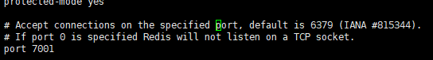
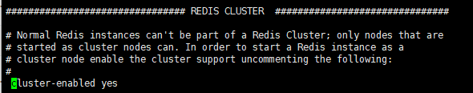
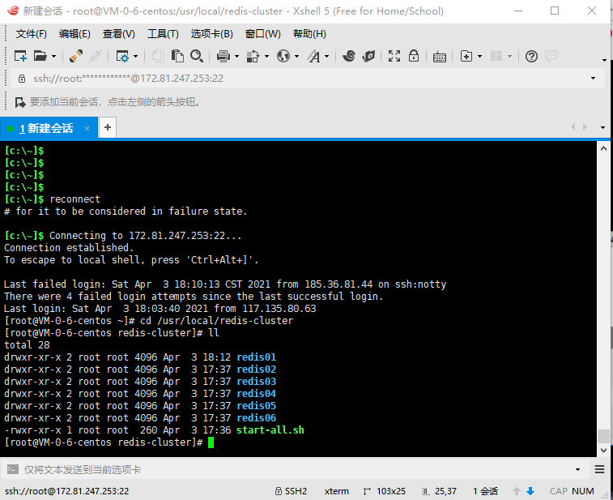
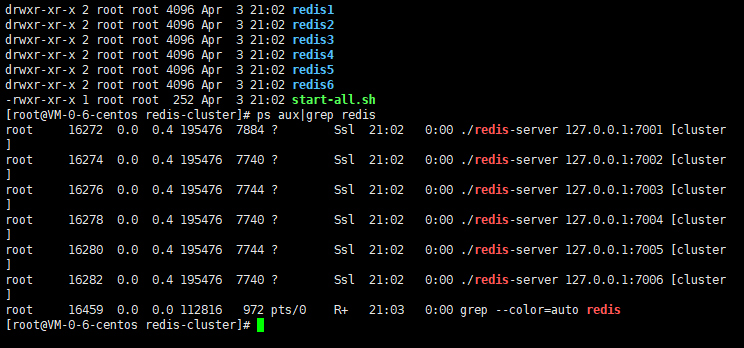
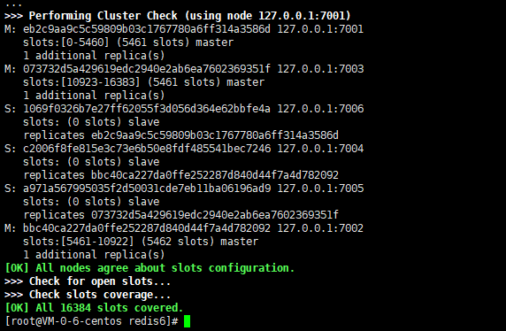
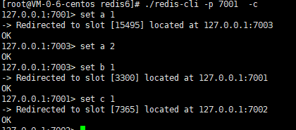

redis集群简介
- 是一个开源的key value存储系统，受到了广大互联网公司的青睐。redis3.0版本之前只支持单例模式，在3.0版本及以后才支持集群；
- redis集群采用P2P模式，是完全去中心化的，不存在中心节点或者代理节点；
- redis集群是没有统一的入口的，客户端（client）连接集群的时候连接集群中的任意节点（node）即可，集群内部的节点是相互通信的（PING-PONG机制），每个节点都是一个redis实例；
- 为了实现集群的高可用，即判断节点是否健康（能否正常使用），redis-cluster有这么一个投票容错机制：如果集群中超过半数的节点投票认为某个节点挂了，那么这个节点就挂了（fail）。这是判断节点是否挂了的方法；
- 那么如何判断集群是否挂了呢? -> 如果集群中任意一个节点挂了，而且该节点没有从节点（备份节点），那么这个集群就挂了。这是判断集群是否挂了的方法；
- 那么为什么任意一个节点挂了（没有从节点）这个集群就挂了呢？ -> 因为集群内置了16384个slot（哈希槽），并且把所有的物理节点映射到了这16384[0-16383]个slot上，或者说把这些slot均等的分配给了各个节点。当需要在Redis集群存放一个数据（key-value）时，redis会先对这个key进行crc16算法，然后得到一个结果。再把这个结果对16384进行求余，这个余数会对应[0-16383]其中一个槽，进而决定key-value存储到哪个节点中。所以一旦某个节点挂了，该节点对应的slot就无法使用，那么就会导致集群无法正常工作。
- 综上所述，每个Redis集群理论上最多可以有16384个节点。
Redis集群的搭建
Linux版本：CentOS7.6 x64
Redis版本：6.0.9
所需环境
Redis集群至少需要3个节点，因为投票容错机制要求超过半数节点认为某个节点挂了该节点才是挂了，所以2个节点无法构成集群。要保证集群的高可用，需要每个节点都有从节点，也就是备份节点，所以Redis集群至少需要6台服务器。这里搭建的是伪分布式集群，即一台服务器虚拟运行6个redis实例，修改端口号为（7001-7006）。
搭建步骤
1.在/usr/local下创建redis-cluster目录，用来存放集群节点
2.将redis安装目录中bin目录下面的所有文件拷贝一份到/usr/local/redis-cluster/redis1目录下
1 | cp -r /usr/local/redis/bin/ /usr/local/redis-cluster/redis1 |
3.删除redis1目录下的快照文件dump.rdb，并且修改该目录下的redis.conf文件，具体修改两处地方：一是端口号修改为7001:

二是开启集群创建模式,cluster-enabled yes 的注释打开:

4.将redis1下的文件复制五份到redis2-redis6中
1 | cp -r /usr/local/redis-cluster/redis1/ /usr/local/redis-cluster/redis2 |
创建完后，如图所示:

5.分别修改redis2-redis6下的redis.conf文件端口号为7002-7006
6.启动所有的redis节点，这里创建一个shell脚本 touch start-all.sh ，用于批量启动所有的redis节点，文件内容如下：
1 | cd redis1 |
创建好启动脚本文件之后，需要修改该脚本的权限，使之能够执行，指令如下：
1 | chmod +x start-all.sh |
执行shell脚本：
1 | ./start-all.sh |
6个redis节点是否启动成功，可以使用 ps aux|grep redis 命令查看：

7.执行集群相关命令，指定redis集群节点的ip和端口号，进入到任意一个redis的bin目录下，都可执行。
1 | ./redis-cli --cluster create 127.0.0.1:7001 127.0.0.1:7002 127.0.0.1:7003 127.0.0.1:7004 127.0.0.1:7005 127.0.0.1:7006 --cluster-replicas 1 |
ps:上面命令中的1代表主节点和从节点的比值是多少，我们是3主3从，所以这个比值是1，而且前三个一定是主节点，redis就是这样规定的。
执行效果如图：

至此，Redi集群搭建成功！上面这个图显示了每个节点所分配的slots（哈希槽），这里总共6个节点，其中3个是从节点，所以3个主节点分别映射了0-5460、5461-10922、10933-16383solts。
最后连接集群节点，连接任意一个即可：
1 | ./redis-cli -p 7001 -c |
ps:一定要加上-c，不然节点之间是无法自动跳转的！如下图可以看到，存储的数据（key-value）是均匀分配到不同的节点的：
